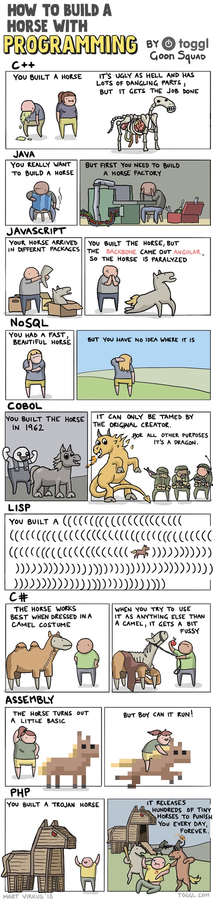

00. Link - MDX-based presentation decks
01. Link - Generate Self-Signed SSL Certificates for Local Development On A Mac
02. Link - Why I no longer use TypeScript with React and why you might want to switch too
03. Link - Transducers: Efficient Data Processing Pipelines in JavaScript
04. Link - An Introduction to Git Merge and Git Rebase: What They Do and When to Use Them
